Plot real cell segmentation polygons supplied directly, stored in a result object, or extracted from a Seurat spatial image. Spot centers are never converted into synthetic polygons.
Usage
SpatialCellPlot(
object = NULL,
res = NULL,
boundaries = NULL,
cells = NULL,
image = NULL,
crop = TRUE,
group.by = NULL,
features = NULL,
palette = "Paired",
palcolor = NULL,
fill.alpha = 0.7,
boundary.color = "grey30",
boundary.linewidth = 0.1,
theme_use = "theme_scop",
theme_args = list(),
...
)Arguments
- object
Optional `Seurat` object used to extract boundaries or values.
- res
Optional result list containing a `boundaries` data frame.
- boundaries
Optional boundary data frame.
- cells
Optional cell or spot identifiers to retain.
- image
Seurat image name. Multi-image objects require an explicit name.
- crop
Whether to crop the plot to the selected boundaries.
- group.by
Boundary column or Seurat metadata column used for filling.
- features
Features to display. Multiple features return a patchwork.
- palette, palcolor
Palette name or explicit colors.
- fill.alpha
Polygon fill opacity.
- boundary.color, boundary.linewidth
Boundary appearance.
- theme_use, theme_args
scop theme and its arguments.
- ...
Additional arguments passed to `ggplot2::geom_polygon()`.
Examples
boundaries <- data.frame(
cell_id = rep(c("cell1", "cell2"), each = 4),
polygon_id = rep(c("p1", "p2"), each = 4),
ring_id = 1,
vertex_order = rep(1:4, 2),
x = c(0, 1, 1, 0, 1.2, 2.2, 2.2, 1.2),
y = c(0, 0, 1, 1, 0, 0, 1, 1),
cell_type = rep(c("A", "B"), each = 4)
)
SpatialCellPlot(boundaries = boundaries, group.by = "cell_type")
